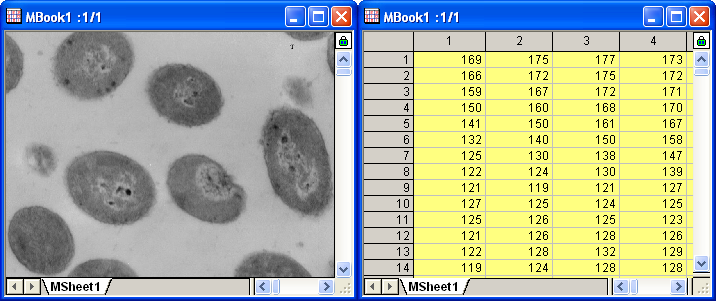

2D-FFT und Filter
2D-FFT-and-Filter
Zusammenfassung
Die 2D-FFT (zweidimensionale Fast-Fourier-Transformation) kann verwendet werden, um das Frequenzspektrum der 2D-Signaldaten (Matrix) zu analysieren. Umgekehrt kann die 2D-IFFT (zweidimensionale Inverse Fast-Fourier-Transformation) das 2D-Signal aus einem 2D-Frequenzspektrum rekonstruieren. OriginPro enthält beide Methoden für die Umwandlung von Zeit- und Frequenzdomänen in 2 Dimensionen, zusammen mit dem 2D-FFT-Filter, um 2D-Signale zu filtern.
Was Sie lernen werden
Dieses Tutorial zeigt Ihnen, wie Sie:
- Bilder in Daten umwandeln
- eine 2D-FFT auf Matrixdaten mit einer DÜ-Verschiebung in die Mitte durchführen
- eine 2D-IFFT auf das 2D-FFT-Ergebnis durchführen, um die ursprünglichen Matrixdaten wiederherzustellen.
- einen 2D-FFT-Filter auf Matrixdaten durchführen.
Schritte
2D-FFT
- Öffnen Sie eine neue Matrixmappe und wählen Sie im Menü Daten: Aus Datei importieren: Bild in Matrix..., um das Bild <Origin-Installationsverzeichnis>\Samples\Image Processing and Analysis\cell.jpg zu importieren.
- Da Origin nicht direkt mit Bilddaten arbeiten kann, muss das Bild zunächst in Matrixdaten umgewandelt werden. Wählen Sie Bild: Konvertierung: In Daten konvertieren, um den Dialog Convert to Data: img2m aufzurufen. Legen Sie den Typ auf Byte(1) fest.
- Klicken Sie zum Fertigstellen der Konvertierung auf die Schaltfläche OK. Die Ergebnisse werden unten gezeigt. Sie können im Menü Ansicht: Datenmodus und Ansicht: Bildmodus wählen, um zwischen den beiden Modi hin- und herzuschalten und das Bild entsprechend anzuzeigen.
- 
- Wählen Sie bei aktiver umgewandelter Ergebnismatrix im Menü Analyse: Signalverarbeitung: FFT: 2D-FFT, um den Dialog 2D FFT: fft2 zu öffnen. Aktivieren Sie das Kontrollkästchen DÜ in die Mitte verschieben, um den Gleichstrom in die Mitte zu verschieben. Aktivieren Sie im Zweig Ausgabe nur Komplexe Matrix und Log-Amplituden-Matrix.
- Klicken Sie auf die Schaltfläche OK, um die FFT-Ergebnisse zu erzeugen. Sowohl die komplexe Matrix als auch die Log-Amplituden-Matrix befinden sich in der gleichen Matrixmappe. Ändern Sie den Bildmodus (Ansicht: Bildmodus) für die Log-Amplituden-Matrix. Die Ergebnisse sollten folgendermaßen aussehen:

2D-IFFT
- Beginnen Sie mit der komplexen Matrix (FFT2_Complex1), die Sie im obigen Abschnitt 2D-FFT erzeugt haben. Aktivieren Sie das Fenster.
- Wählen Sie im Menü Analyse: Signalverarbeitung: FFT: 2D-IFFT, um den Dialog 2DIFFT: ifft2 aufzurufen.
- Im Dialog ist die imaginäre Matrix nicht erforderlich, da die Eingabematrix eine komplexe Matrix ist. Aktivieren Sie Verschieben rückgängig machen, da die Gleichstromkomponente DC verschoben wurde. In der Ausgabe sollten die Kontrollkästchen Reale Matrix und Imaginäre Matrix aktiviert sein.
- Klicken Sie auf OK. Das Ergebnis wird in der gleichen Matrixmappe ausgegeben, in der sich auch die komplexe Eingabematrix befindet.
- Wie in dem Vergleich unten zu sehen ist, hat die IFFT das ursprüngliche Signal wiederhergestellt.
2D-FFT-Filter
- Öffnen Sie eine neue Matrixmappe und wählen Sie im Menü Daten: Aus Datei importieren: Bild in Matrix..., um das Bild <Origin-Installationsverzeichnis>\Samples\Image Processing and Analysis\myocyte1.tif zu importieren.

- Wählen Sie bei aktivem importierten Bild im Menü Bild: Konvertierung: In Daten konvertieren. Damit wird der Dialog Convert to Data: img2m geöffnet. Legen Sie den Typ mit Byte(1) fest und klicken Sie auf OK, um die Konvertierung fertigzustellen.
- Aktivieren Sie die konvertierte Matrix und wählen Sie im Menü Analyse: Signalverarbeitung: 2D-FFT-Filter. Der Dialog der 2D FFT Filters: fft_filter2 wird geöffnet.
- Aktivieren Sie unten im Dialog das Kontrollkästchen Automatische Vorschau, um das Ergebnis im rechten Bedienfeld anzuzeigen. Legen Sie den Filtertyp auf Bandpass fest und setzen Sie dann den Unteren Grenzwert und den Oberen Grenzwert auf 0,05 bzw. auf 0,25. Die anderen Einstellungen behalten ihre Standardwerte.
- Klicken Sie auf die Schaltfläche OK, um das gefilterte Ergebnis zu erhalten. Wie im Bild unten zu sehen, wird das Hintergrundrauschen (das Licht) entfernt.